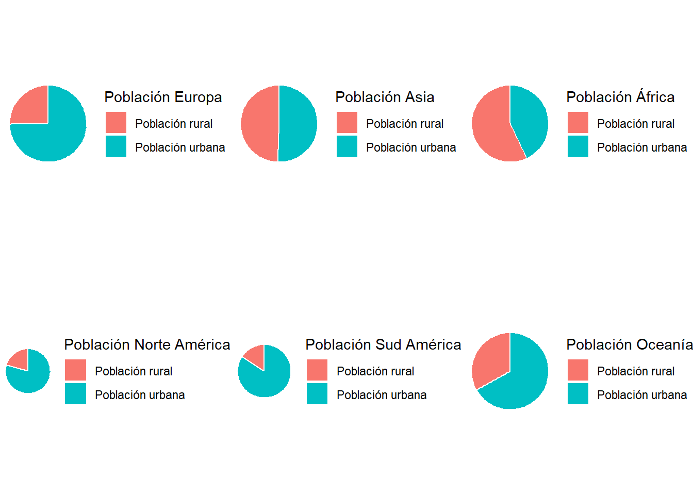
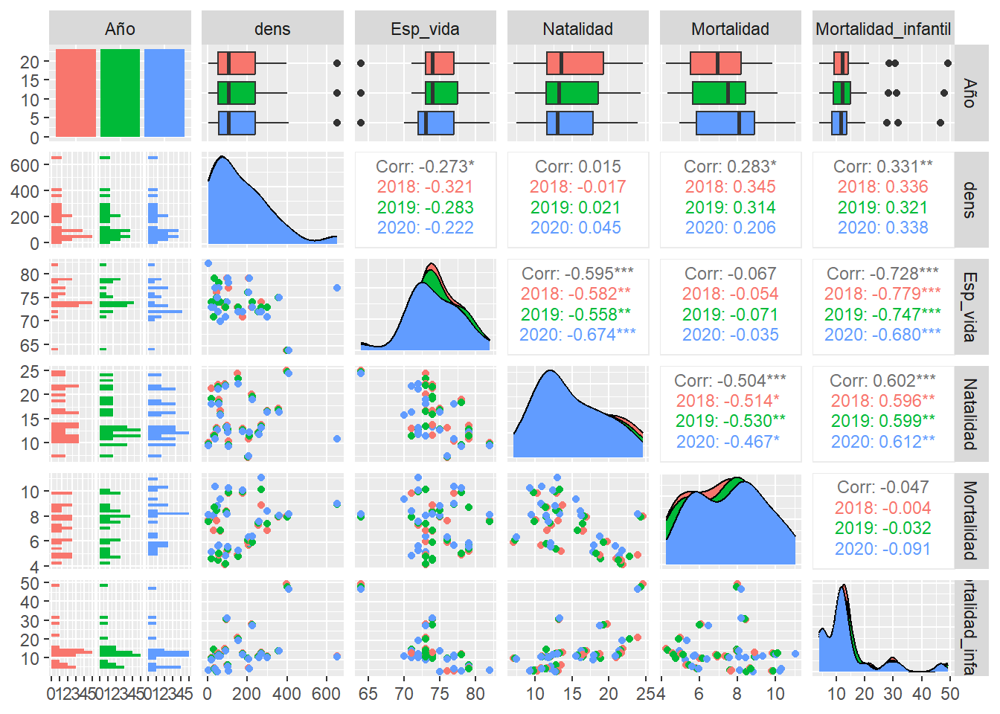

Rows: 1,073
Columns: 14
$ Country <chr> "Afghanistan", "Afghanistan", "Afghanistan", "…
$ Year <dbl> 2017, 2018, 2019, 2020, 2021, 2017, 2018, 2019…
$ `Total Population` <chr> "-", "36,686,784", "37,769,499", "38,972,230",…
$ `Urban Population` <chr> "-", "9,353,296", "9,727,157", "10,142,913", "…
$ `Rural Population` <chr> "-", "27,333,488", "28,042,342", "28,829,317",…
$ `Population Density` <chr> "55", "56", "58", "60", "-", "105", "105", "10…
$ `Life Expectancy` <chr> "63.0", "63.0", "64.0", "63.0", "62.0", "79.0"…
$ `Birth Rate` <dbl> 37.342, 36.927, 36.466, 36.051, 35.842, 10.870…
$ `Death Rate` <dbl> 7.027, 6.981, 6.791, 7.113, 7.344, 8.150, 8.30…
$ `Fertility Rate` <chr> "5.129", "5.002", "4.87", "4.75", "4.643", "1.…
$ `Infant Mortality Rate` <chr> "49.4", "47.8", "46.3", "44.8", "43.4", "8.3",…
$ `Growth Rate` <chr> "-", "3.0", "3.0", "3.0", "3.0", "-", "0.0", "…
$ Continent <chr> "Asia", "Asia", "Asia", "Asia", "Asia", "Europ…
$ Area_km2 <dbl> 652230, 652230, 652230, 652230, 652230, 28748,…Demografía Mundial
Introducción
Este proyecto recoge datos poblacionales de los países del mundo, tomados en 3 años consecutivos (del 2018 al 2020) y pretende estudiarlos y analizarlos a nivel continental para ver si existen diferencias significativas entre continentes.
Para ello, analizaremos cada continente individualmente y nos centraremos en entender las diferencias que puedan haber; es decir, aportar información histórica, si se da el caso, que pueda explicar los aumentos o decrementos de los valores demográficos.
Los datos utilizados se han sacado de los siguientes enlaces:
Descripción variables
Ahora que ya tenemos bien construida nuestra base de datos, hagamos una breve explicación de las distintas variables que lo conforman:
- \(\textit{País}\) nos indica el país de estudio.
- \(\textit{Continente}\) variable que nos indica a continente pertenece cada uno de los países.
- \(\textit{Area_km2}\) se refiere al área en \(km^2\) que ocupa cada uno de los países.
- \(\textit{Año}\) nos expone a que año fue tomada la muestra, ya que observamos que de cada país tenemos 4 muestras distintas que vienen tomadas desde el 2018 hasta el 2021.
- \(\textit{Pob_total}\) nos indica en número total de habitantes en cada país.
- \(\textit{Pob_urbana}\) y \(\textit{Pob_rural}\) que se refieren al numéro de habitantes que residen en una localidad urbana y en una rural, respectivamente.
- \(\textit{Densidad}\) que nos indica la densidad de cada país; recordemos que la densidad no és más que un indicador que nos permite saber cuánta población habita en una zona territorial. Ésta viene dada por: \(\textit{Densidad} =\frac{\textit{Pob_total}}{\textit{Area_km2}}\)
- \(\textit{Esp_vida}\) presenta la edad media que pueden alcanzar los individuos de cada país.
- \(\textit{Natalidad}\) número de personas que nacen en un año y país determinado, por 1000 habitantes estimados a mitad de año.
- \(\textit{Mortalidad}\) número de personas que fallecen en un año y país determinado, por 1000 habitantes estimados a mitad de año.
- \(\textit{Fertilidad}\) esla tasa de fertilidad total que representa el número de hijos que tendría una mujer si viviera hasta el final de sus años fértiles y tuviera hijos de acuerdo con las tasas de fertilidad específicas por edad del año indicado.
- \(\textit{Mortalidad_infantil}\) número total de defunciones de menores de un año de vida, por cada 1000 nacidos vivos.
- \(\textit{Crecimiento}\) es la diferencia entre el número de nacimientos y el de muertes totales.
““” - analisis a nivel continental desde el 2018 al 2020 - ver si hay diferencias significativas por continentes - en cada continente analizar los paises que más difieren del resto - ver si en el 2020 han habido cambios significativos - ver si en los paises con más diferencias en mortalidad de un año al otro vienen dados por un evento significativo - ver si la paz afecta en la esperanza de vida y en la natalidad ejemplo Dinamarca ““”
Carga de datos y limpieza
Empezamos con la carga de los dataframes que usaremos y veamos la estructura del nuevo tibble.
Ahora, procedemos con la limpieza; para empezar, renombramos las columnas con la función rename(), ya que sus nombres estaban en inglés, y cambiamos la posición de algunas variables con la función relocate(), para que las variables sigan un orden lógico.
Además, cambiaremos el tipo de algunas variables ya que queremos que se ajusten a las necesidades del estudio. Para ello, utilizamos la función mutate().
Visualicemos el conjunto de datos que presentan algún valor NA.
# A tibble: 5 × 14
Año Pais Continente Area_km2 Pob_total Pob_urbana Pob_rural Densidad
<chr> <int> <int> <int> <int> <int> <int> <int>
1 2017 0 23 23 209 209 209 11
2 2018 0 24 24 0 2 12 13
3 2019 0 24 24 0 2 12 13
4 2020 0 24 24 0 2 12 13
5 2021 0 24 24 0 2 12 216
# ℹ 6 more variables: Esp_vida <int>, Natalidad <int>, Mortalidad <int>,
# Mortalidad_infantil <int>, Fertilidad <int>, Crecimiento <int>Como vemos, tenemos bastantes datos faltantes en los años 2017 y 2021; por eso, reduciremos nuestro estudio entre los años 2018 y 2020. Utilizaremos la función filter() para eliminar los dos años de nuestro tibble.
Ahora, trataremos particularmente los datos NA de las variables Contiente y Area_km2, ya que son las variables que hemos añadido de otro dataframe. En este caso, rellenaremos manualmente. La información con la que hemos completado estos valores se han sacado de las correspondientes páginas web de Wikipedia de cada uno de los países.
Visualizamos la estructura del dataframe resultante de la limpieza:
Rows: 648
Columns: 14
$ Pais <chr> "Afghanistan", "Afghanistan", "Afghanistan", "Alba…
$ Continente <chr> "Asia", "Asia", "Asia", "Europe", "Europe", "Europ…
$ Area_km2 <dbl> 652230, 652230, 652230, 28748, 28748, 28748, 23817…
$ Año <chr> "2018", "2019", "2020", "2018", "2019", "2020", "2…
$ Pob_total <dbl> 36686784, 37769499, 38972230, 2866376, 2854191, 28…
$ Pob_urbana <dbl> 9353296, 9727157, 10142913, 1728969, 1747593, 1762…
$ Pob_rural <dbl> 27333488, 28042342, 28829317, 1137407, 1106598, 10…
$ Densidad <int> 56, 58, 60, 105, 104, 104, 18, 18, 18, 242, 237, 2…
$ Esp_vida <int> 63, 64, 63, 79, 79, 77, 76, 76, 74, NA, NA, NA, NA…
$ Natalidad <dbl> 36.927, 36.466, 36.051, 10.517, 10.343, 10.285, 24…
$ Mortalidad <dbl> 6.981, 6.791, 7.113, 8.308, 8.480, 10.785, 4.482, …
$ Mortalidad_infantil <dbl> 47.8, 46.3, 44.8, 8.3, 8.4, 8.4, 20.6, 20.1, 19.6,…
$ Fertilidad <dbl> 5.002, 4.870, 4.750, 1.440, 1.414, 1.400, 3.023, 2…
$ Crecimiento <int> 3, 3, 3, 0, 0, -1, 2, 2, 2, -2, -2, -2, 2, 2, 2, 3…Análisis multivariante exploratorio
Una vez hecha la limpieza, empezamos con el análisis multivariante. Debido a que nos interesa realizar un estudio por continentes y por año, utilizaremos la función group_by(), para poder agrupar nuestros datos en base a nuestros intereses. Primero, veamos la población total por continentes en los diferentes años:
# A tibble: 18 × 3
# Groups: Continente [6]
Continente Año `Población total`
<chr> <chr> <dbl>
1 Africa 2018 1267973300
2 Africa 2019 1299722341
3 Africa 2020 1332001684
4 Asia 2018 4551390293
5 Asia 2019 4591104253
6 Asia 2020 4627046275
7 Europe 2018 747225176
8 Europe 2019 747609915
9 Europe 2020 747519807
10 North America 2018 577352828
11 North America 2019 581350287
12 North America 2020 586825619
13 Oceania 2018 42542878
14 Oceania 2019 43234733
15 Oceania 2020 43901335
16 South America 2018 426223875
17 South America 2019 429922107
18 South America 2020 433273442Vemos que el contiente con más población es Asia, seguido de África; en cambio, el continente menos poblado es Oceanía. Vamos a visualizar ahora como se distribuye esta población en los diferentes continentes; para ello, hemos escogido el año 2019 para representar las posibles diferencias entre continentes, ya que, como vemos a continuación, los datos del mismo continente en los diferentes años no varía considerablemente.
# A tibble: 18 × 4
# Groups: Continente [6]
Continente Año `Población urbana` `Población rural`
<chr> <chr> <dbl> <dbl>
1 Africa 2018 537897701 730075599
2 Africa 2019 557456213 742266128
3 Africa 2020 577565105 754436579
4 Asia 2018 2179364987 2188304798
5 Asia 2019 2224968208 2180304905
6 Asia 2020 2268311597 2171118286
7 Europe 2018 555006254 189343444
8 Europe 2019 556922779 187795721
9 Europe 2020 558499505 186112306
10 North America 2018 453489706 120112644
11 North America 2019 458047980 119551791
12 North America 2020 463788723 119199946
13 Oceania 2018 27888434 13788474
14 Oceania 2019 28360668 14007257
15 Oceania 2020 28816244 14215417
16 South America 2018 357982255 68241620
17 South America 2019 361888325 68033782
18 South America 2020 365566629 67706813Warning: package 'cowplot' was built under R version 4.2.3
Attaching package: 'cowplot'The following object is masked from 'package:lubridate':
stamp
Lo primero que nos llama la atención es que en América, en general, la mayoría de la población se concentra más en la zonas urbanas. Como también en Europa y Oceanía pero de manera menos notoria.
Por otro lado, la población en Asia se reparte de manera igualitaria en las dos zonas. Y, finalmente, en África, todo lo contrario, la mayoría de la población se concentra más en la zona rural.
Vamos a visualizar ahora los valores medios, por continente y año de las diferentes variables del estudio. Empezamos con la natalidad:

Analicemos bien estos resultados. Como vemos, llama la atención los valores que presenta Europa. Como vemos a continuación, la media de personas que nacen por año en este continente es realativamente baja: aproximadamente 10 recién nacidos por cada 1000 habitantes.
# A tibble: 3 × 2
Año media
<chr> <dbl>
1 2018 10.1
2 2019 9.74
3 2020 9.39De la misma forma, África presenta los valores de natalidad más altos; en concreto
# A tibble: 3 × 2
Año media
<chr> <dbl>
1 2018 31.7
2 2019 31.3
3 2020 30.8Como vemos, los valores difieren significativamente de los de Europa. No vemos diferencias significativas por años en ningún continente.
Continuamos con la mortalidad:
Igual que antes, Europa es el continente con el índice de mortalidad más alto. Fijémonos también en los diferentes valores por años:
# A tibble: 3 × 2
Año media
<chr> <dbl>
1 2018 9.76
2 2019 9.57
3 2020 10.6 En 2020, aumenta el número de fallecidos. Como vemos, en la mayoría de continentes ocurre lo mismo.
Vamos ahora con la mortalidad infantil.
África es el continente con más mortalidad infantil, con diferencia. Ilustremos estos valores:
# A tibble: 3 × 2
Año media
<chr> <dbl>
1 2018 43.2
2 2019 42.2
3 2020 41.2En concreto, mueren al año 43 niños/niñas por cada 1000 nacimientos. Teniendo en cuenta el número de nacimientos en este continente, esto equivale a \(\textbf{1.5 millones de muertes infantiles cada año}\).
Por otro lado, Europa presenta unos valores mínimos en mortalidad infantil:
# A tibble: 3 × 2
Año media
<chr> <dbl>
1 2018 3.90
2 2019 3.79
3 2020 3.68Por último, veamos la fertilidad:
Observemos que la mayor tasa de fertilidad total está en África, veamos los datos
# A tibble: 3 × 2
Año media
<chr> <dbl>
1 2018 4.23
2 2019 4.16
3 2020 4.10Entonces, nos encontramos que de media, cada persona gestante de África, tendría 4 hijos de acuerdo con la tasa de fertilidad específica por edad.
Además, observemos que Europa es el continente con menor tasa de fertilidad. Vamos a ver cuántos hijos de media tendrían las personas gestantes de este continente.
# A tibble: 3 × 2
Año media
<chr> <dbl>
1 2018 1.55
2 2019 1.53
3 2020 1.51Otra variable interesante en nuestro estudio es la esperanza de vida. Veamos representada la distribución de esta variable en cada continente, en un año concreto (2019).
# A tibble: 1 × 14
Pais Continente Area_km2 Año Pob_total Pob_urbana Pob_rural Densidad
<chr> <chr> <dbl> <chr> <dbl> <dbl> <dbl> <int>
1 Curacao North America 444 2019 157441 140277 17164 355
# ℹ 6 more variables: Esp_vida <int>, Natalidad <dbl>, Mortalidad <dbl>,
# Mortalidad_infantil <dbl>, Fertilidad <dbl>, Crecimiento <int>Resalta África; la esperanza de vida es mucho más baja que en los demás continentes



cor.test(world_population$Natalidad, world_population$Fertilidad, alternative = "greater")
Pearson's product-moment correlation
data: world_population$Natalidad and world_population$Fertilidad
t = 112.52, df = 628, p-value < 2.2e-16
alternative hypothesis: true correlation is greater than 0
95 percent confidence interval:
0.972772 1.000000
sample estimates:
cor
0.9760841 cor.test(world_population$Esp_vida, world_population$Mortalidad, alternative = "less")
Pearson's product-moment correlation
data: world_population$Esp_vida and world_population$Mortalidad
t = -3.0963, df = 625, p-value = 0.001024
alternative hypothesis: true correlation is less than 0
95 percent confidence interval:
-1.00000000 -0.05762643
sample estimates:
cor
-0.1229126 cor.test(world_population$Esp_vida, world_population$Mortalidad_infantil, alternative = "less")
Pearson's product-moment correlation
data: world_population$Esp_vida and world_population$Mortalidad_infantil
t = -51.725, df = 571, p-value < 2.2e-16
alternative hypothesis: true correlation is less than 0
95 percent confidence interval:
-1.0000000 -0.8949037
sample estimates:
cor
-0.907808 Estimación y correlaciones
Estimación del vector de medias por continentes:
# A tibble: 18 × 11
# Groups: Continente [6]
Continente Año `Población media` `Población rural media`
<chr> <chr> <dbl> <dbl>
1 Africa 2018 23924025. 13775011.
2 Africa 2019 24523063. 14005021.
3 Africa 2020 25132107. 14234652.
4 Asia 2018 103992138. 52102495.
5 Asia 2019 104887455. 51912022.
6 Asia 2020 105700712. 51693293.
7 Europe 2018 19085890. 4854960.
8 Europe 2019 19095346. 4815275.
9 Europe 2020 19092611. 4772110.
10 North America 2018 24939233. 5222289.
11 North America 2019 25113034. 5197904.
12 North America 2020 25347333. 5182606.
13 Oceania 2018 3473076. 1149040.
14 Oceania 2019 3530660. 1167271.
15 Oceania 2020 3585972. 1184618.
16 South America 2018 30444562. 4874401.
17 South America 2019 30708722. 4859556.
18 South America 2020 30948103 4836201.
# ℹ 7 more variables: `Población urbana media` <dbl>, `Densidad media` <dbl>,
# `Esperanza media de vida` <dbl>, `Natalidad media` <dbl>,
# `Mortalidad media` <dbl>, `Mortalidad infantil media` <dbl>,
# `Fertilidad media` <dbl>